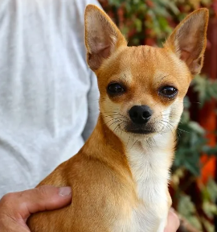
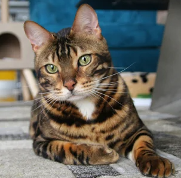

Ayuda Animal
Esta organización esta destinada al cuidado de animales que se encuentran en situación de calle,
brindandoles los cuidados necesarios mientras encuentran una familia capaz de darles todos los cuidados y por
sobretodo, el amor y cariño que todo ser necesita.
Nuestro Equipo
¬ Vicente Quiero - Administrador
¬ Edison Pardo - Veterinario
¬ Cristopher Curin - Adiestrador
Secciones de Ayuda

Perros

Gatos